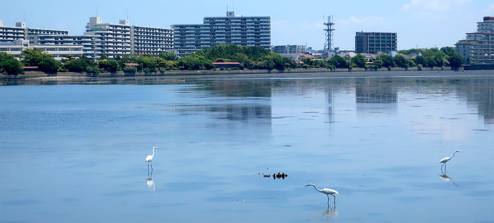

初めてなら、観察センターを目指そう
谷津干潟は、千葉県習志野市の街なかに残る干潟です。周囲の遊歩道から、水辺の景色や野鳥を眺めながら散策を楽しめます。
初めてなら、谷津干潟自然観察センター付近から遊歩道を一周するコースがおすすめです。館内も見学する方は、開館時間・休館日・入館料を事前にご確認ください。
センター内でひと休みするなら「オアシス」
館内にはレストスペース「オアシス」があります。散策前後の休憩先として、利用方法は公式案内をご確認ください。
センターを起点に、干潟をぐるっと一周
遊歩道は一周約3.5km。歩くなら約60分、景色や野鳥を観察しながらなら約90分が目安です。センターの館内を見学する場合は、散策とは別に時間を見込んでおきましょう。

途中で休憩を取りながら、自分のペースで歩きましょう。時間や体力、天候に合わせて、無理せず途中で引き返しても大丈夫です。
立ち止まって、景色や生きものを楽しもう

気になる場所では足を止めて、水辺をゆっくり眺めてみましょう。サギの仲間やカワウ、カモの仲間など、季節によってさまざまな鳥の姿を楽しめます。双眼鏡があれば、離れた場所にいる鳥の動きも観察しやすくなります。
潮の満ち引きによっても景色は変わります。水面が広がるときと、泥の上で鳥がエサを探すときでは、違った表情に出会えます。
周辺のカフェでひと休み
散策後、谷津駅方面へ足を延ばすなら、こんなカフェもあります。一周コースの途中ではなく、センター付近に戻ってからの寄り道としてご紹介します。
カフェルンルン
谷津駅北口すぐのカフェ。ランチやシフォンケーキを楽しめるお店です。散策後の食事や、電車で帰る前のお茶に。
ヤツカフェ
谷津遊路商店街にある紅茶専門店。散策のあとは、紅茶と自家製スコーンでひと休みはいかがでしょうか。
ecotone（エコトーン）
谷津駅北口近くにある、自家焙煎コーヒーを楽しめる無人カフェ。散策の帰りに、セルフスタイルでひと休みできます。
出発前に確認したいこと
天気・満干時間と持ち物
歩きやすい靴と飲み物を用意し、天気や気温に合わせて帽子や羽織るものを持っていきましょう。出発前に天気と満干時間を確認しておくと、予定を立てる参考になります。
掲載している満干時間は気象庁「千葉」の予測値です。谷津干潟そのものの観測値ではなく、実際の潮位・時刻と異なる場合があります。
観察・散策のルール
柵を越えて干潟内に入らず、遊歩道や観察施設から静かに観察しましょう。鳥を驚かせないようにし、立ち止まるときはほかの人の通行にも気を配りましょう。ゴミは持ち帰りましょう。